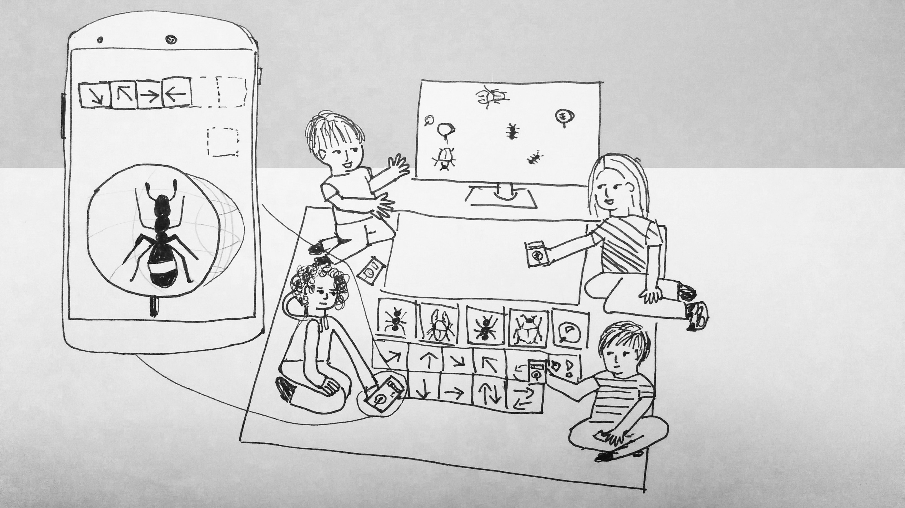
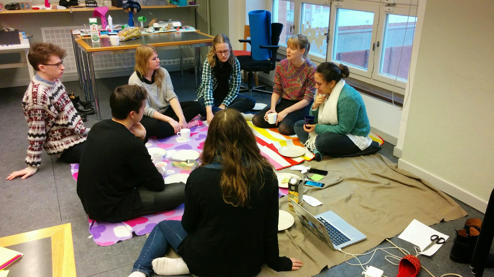
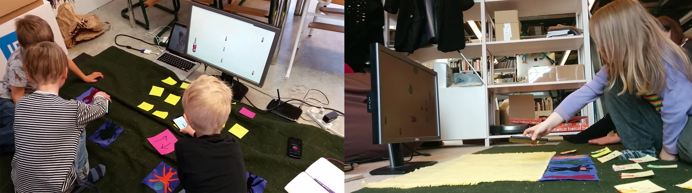
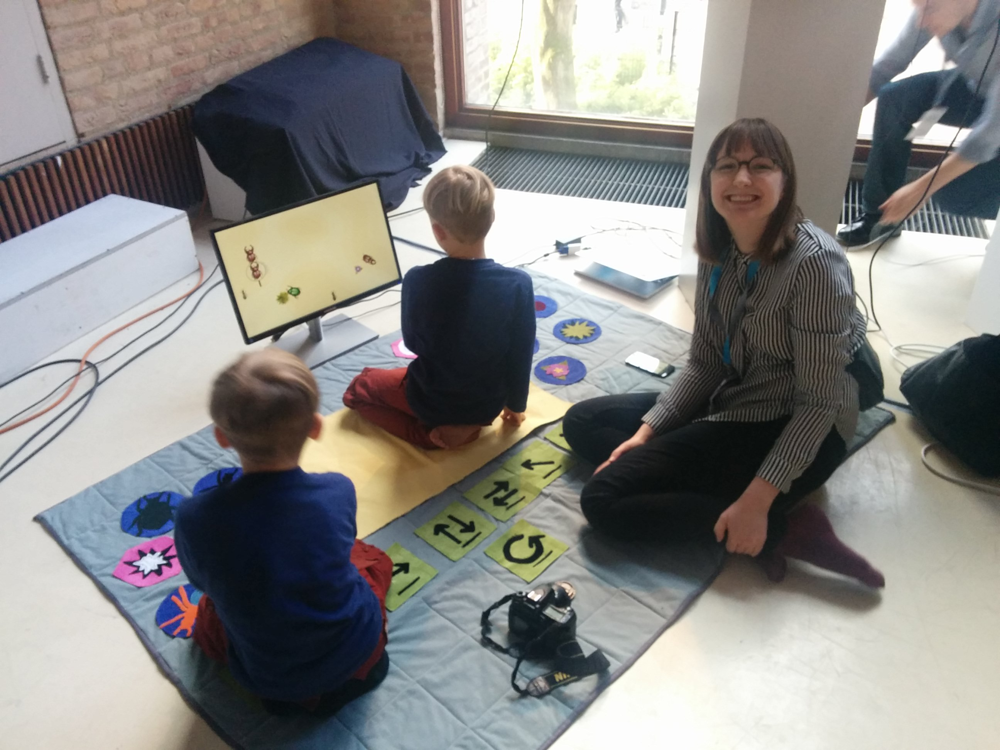

What is Alfombra appliqué?
Alfombra Appliqué is a play mat where children program insects. The programming takes place on touchscreen phones by scanning NFC-tags inside appliqued patches on a mat. You can program an insect to walk in different directions and set a relation to other figures. You choose a position for the insect and let it off to a big common screen where the insect act out its behavior.
Design process
The design process of Alfombra Appliqué was formed by classic interaction design methods such as prototyping, workshops and play tests. Furthermore there was a focus on exploring a material for interaction design and that was NFC readers in phones.



The last picture is from the demo at the TEI2016 conference.
Extra material
Video made in the project.
MY ROLE
The start of Alfombra Appliqué was the practical work done in my master thesis. I done all work on my own, but of course with help from my supervisor Ylva Fernaeus and my supervision group.
Tools
Paper sketching, nfc, android phones, unity, fabric, sewing machine, programing etc.
Made in
Spring/Autum 2015
Research Paper
A
paper me and my supervisor wrote on the project was accepted to the conference
TEI2016.